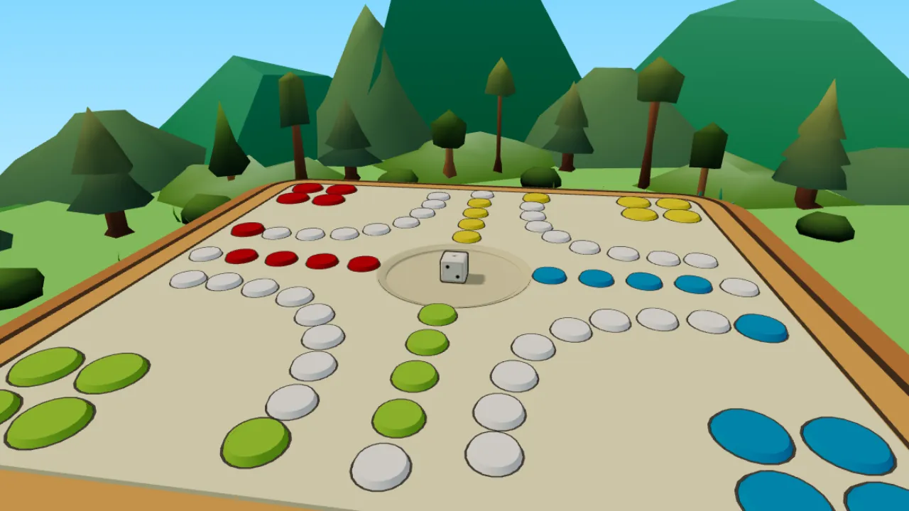

Play Ludo online – free, in 3D, no download
Burrec mos u zemëro is the classic family race game (Ludo, Mensch ärgere dich nicht) rebuilt in 3D with real dice physics. Invite friends with a link, take on the Computer, or pass one phone around the table.

Three ways to play
With friends
Create a private room and send the invite link. Up to four players, from anywhere. Empty seats are played by the Computer.
How rooms work →Against the Computer
You against three Computers, whenever you like. No turn timer, and the game waits if you step away.
Play vs Computer →Around the table
2 to 4 people share one phone or tablet and pass it on each turn. Made for family nights.
Pass and play →Three game modes
Classic
The full game: roll a 6 to leave home and bring all four pawns into your finish lane.
Quick
Everyone starts with one pawn already out. The first pawn to reach its finish lane wins.
First capture
Sudden death: the first player to capture another pawn wins the game.
How to play in 30 seconds
- Everyone has four pawns at home. Roll a 6 to bring one onto your start field, then roll again.
- Move clockwise by the number you roll. Every 6 gives you another roll.
- Land exactly on an opponent's pawn to capture it and send it home.
- After one lap, turn into your own finish lane. You can't overshoot its end.
- The first player with all four pawns in the finish lane wins.
Made to be played, not installed
Real 3D dice
The dice tumble with real physics. The server rolls the value, so every roll is fair for everyone at the table.
Finishers
Captures play out as short cinematics: a magic wand, a UFO, a trapdoor and more.
Dress your pawns
Hats and props for each pawn, and the flag of your country waving from your pawn.
Questions
Is Burrec mos u zemëro free?
Yes. The whole game is free and runs in your browser on a phone, tablet or computer. There is nothing to download.
Do I need an account?
No. Type a name and play as a guest. A free account (email, Google or Apple) adds chat, pawn Props and Finishers, and keeps your name on every device.
How do I play with friends?
Create a private room and tap the invite button: your friends get a link (or the 4-letter room code) and join with one tap. Seats nobody takes are played by the Computer, so you can start straight away.
Can we play on one phone or tablet?
Yes. Choose Around the table: 2 to 4 people take turns on the same device, with no turn timer. It still needs an internet connection.
How do I get a pawn out of home?
Roll a 6. The pawn moves onto your start field and you roll again. While all four of your pawns are at home, you get up to three rolls per turn to get that 6.
What happens when I land on another pawn?
It is captured and goes back to its home. Pawns in their finish lane are safe. You can jump over any pawn, so there are no blockades.
Ready to roll? It takes ten seconds to start.
Play now